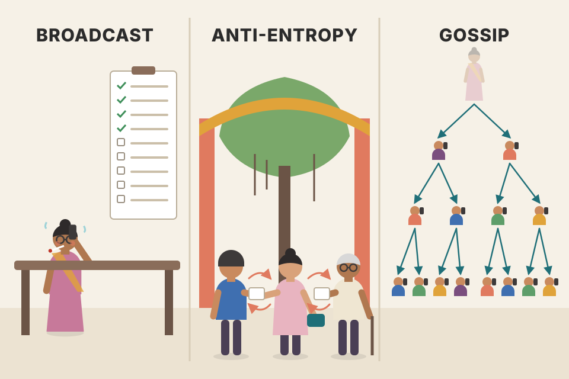
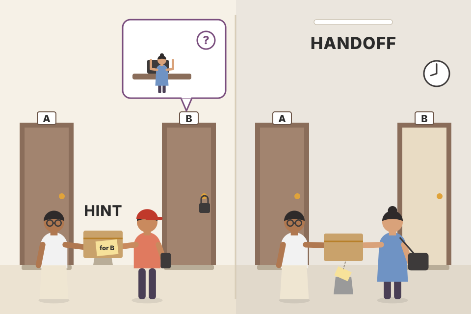
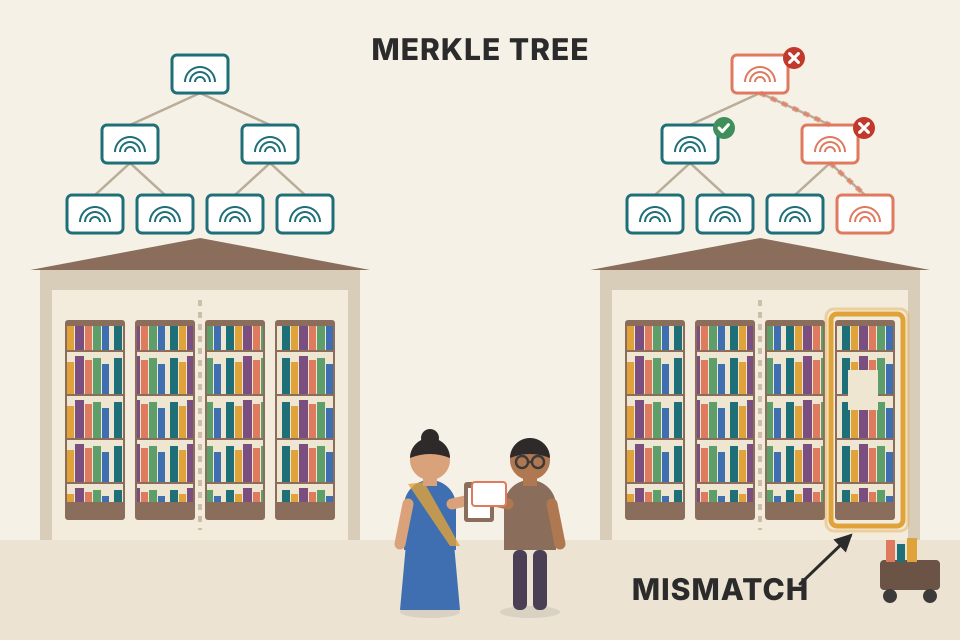
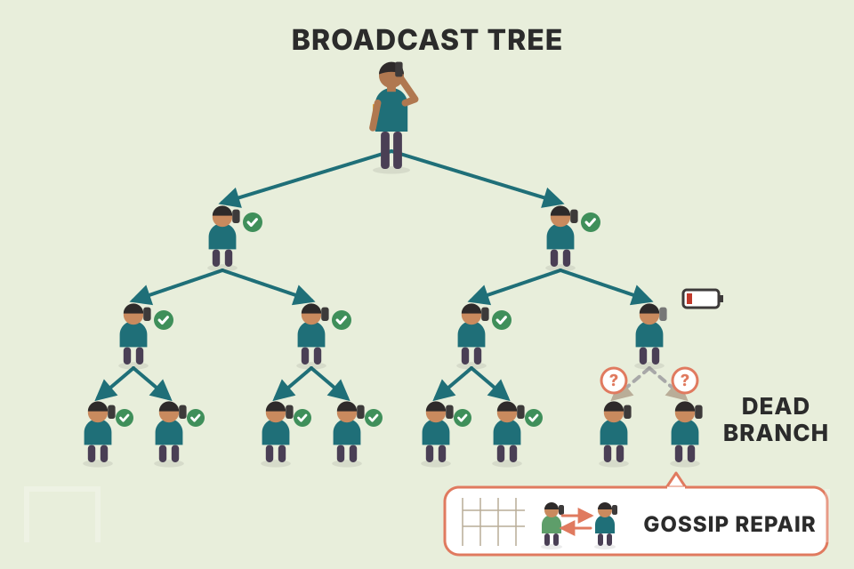

Alex Petrov · Database Internals (2019) · Chapter 12 · pdf p381–402
Anti-entropy and dissemination: repair the drift, spread the word
Replicas drift apart, and cluster news (who joined, who died, which schema is live) has to reach every node. This chapter is about both problems: the repair tools (read repair, digest reads, hinted handoff, Merkle trees, bitmap version vectors) and the spreading tools (gossip, overlay trees, Plumtree, HyParView). Every plate follows the book's order. The simulators run the code printed next to them. Numbers marked modelled or simulated come from those simulations or formulas, not from real clusters; numbers marked measured come from the cited paper or official docs.
seed 1 · randomised demos (gossip, trees, views) use it
How the chapter fits together
read this first
Two questions run through the chapter. How do replicas that missed something catch up? (anti-entropy) and how does one node's news reach everyone, quickly and reliably, without one node doing all the work? (dissemination). The first half is a toolbox of repair mechanisms, from cheapest and narrowest to broadest. The second half starts from gossip and then trims its waste with trees and partial views.
ProblemBroadcast: costly, fragile→Primary delivery + periodic sync→entropy = how far replicas diverge
ForegroundRead repair+Digest readsHinted handoff→ride on reads / writes
BackgroundMerkle treesBitmap version vectors→find divergence in data nobody reads
SpreadGossip (S → I → R)→fanout · redundancy · latency · loss of interest
Trim wasteOverlay / spanning tree+gossip fallback→PlumtreeonHyParView partial views
Summaryscope reductionrecencycompleteness
01 · CHAPTER OPENING
Three ways to tell everyone
pdf p381–383 · Fig 12-1
So far the book's communication patterns were either peer-to-peer or one-to-many (a coordinator talking to its replicas). If one node has to push data records to everyone, it must be up, it must reach every other node, and even then the whole job is capped by one machine's throughput.
Fast, reliable spreading matters less for data records and more for cluster-wide metadata: membership (nodes joining and leaving), node states, failures, schema changes and so on. These messages are rare and small, but they must reach everyone as quickly and reliably as possible. Following [DEMERS87], the book sorts the ways to do this into three groups (Figure 12-1):
(a) Broadcast: one process sends the notification to all others.
(b) Anti-entropy: periodic peer-to-peer exchange. Peers pair up and swap what they know.
(c) Gossip (cooperative broadcast): whoever receives the message becomes a broadcaster too, so the news spreads faster and more reliably.
Why plain broadcast falls short. It is the simplest and works well in a small cluster. In a large one it is expensive (one node sends N−1 messages) and unreliable (everything hangs on one process). A process may not even know every other process exists. And the sender and each recipient must be up at the same moment, which is not always possible.
The relaxation. Accept that some updates won't arrive. The coordinator does its best and delivers to everyone it can reach; then anti-entropy brings stragglers back in sync. Delivery becomes everyone's job and splits into two steps: primary delivery and periodic sync.
Entropy measures disorder. In a distributed system it means how much node states have diverged. We want as little as possible, hence many "anti-entropy" techniques.
Anti-entropy brings nodes up to date when primary delivery failed. The system keeps working even if the coordinator dies mid-way, because other nodes keep spreading the information. Put differently, anti-entropy lowers the bound on convergence time in eventually consistent systems.
Background vs foreground. Anti-entropy runs a process that compares and reconciles missing or conflicting records. Background processes use helper structures such as Merkle trees and update logs to find divergence. Foreground processes piggyback on reads or writes: hinted handoff, read repair, and the like.
The naive repair is very costly. To find missing records you compare replica states pairwise; for a large dataset that means reading the whole dataset on both nodes and telling replicas about newer changes they missed. To cut the cost, look at how replicas fall behind and how data is accessed. The rest of the first half is exactly that.
Picture it

A school sends news home. Broadcast: the principal phones every parent herself; it's slow, and if she falls ill halfway, half the parents never hear. Anti-entropy: parents chat at the school gate every morning and compare notes; anything one of them missed, they catch up on. Gossip: every parent who hears the news phones two others; within a few rounds the whole school knows, even if the principal dropped out after the first call.
The three patterns on the same cluster (simulated)
What's happening behind it
Model: one message, synchronous rounds. Broadcast: the coordinator sends N−1 messages in round 1; if it crashes after k of them, the rest never hear. Anti-entropy: the same best-effort broadcast, then every round each node picks one random peer and they swap state both ways (push-pull); a node that knows tells the other. Gossip: each node that knows sends to 2 random peers per round for 3 rounds, then stops (a crude loss of interest). Count the cost two ways: total messages, and the most messages any single node had to send. Broadcast puts all of it on one node; the other two spread it out, and keep going when the coordinator dies. Anti-entropy never really stops (in a real system it runs forever); its "messages" column counts exchanges only until everyone knows.
Beyond the book: Demers' numbers for anti-entropy
[DEMERS87] calls the three patterns direct mail, anti-entropy and rumor mongering. For anti-entropy where each node contacts one random peer per round, they give recurrences for pi, the fraction of nodes still missing the update after round i: pull gives pi+1 = pi², push gives pi+1 = pi(1 − 1/n)n(1−pi) ≈ pi·e−1 once most nodes know. So pull (or push-pull) finishes the tail far faster. The readout below iterates both recurrences for the node count you picked (formula, not a simulation).
Connects to
Ch.11 Replication and Consistency (previous page): eventual consistency and tunable consistency are why replicas are allowed to drift; this chapter is how they drift back.
Ch.9 Failure Detection: gossip-based failure detectors are one of the main users of the dissemination half of this chapter.
Papers behind this plate
Demers, Greene, Hauser, Irish, Larson, Shenker, Sturgis, Swinehart, Terry, "Epidemic algorithms for replicated database maintenance", PODC '87 [DEMERS87]. The origin of "anti-entropy" and "rumor mongering" for databases (Xerox Clearinghouse). It gives the push/pull analysis above and is still the clearest read on the topic.
02 · READ REPAIR
Fix what the client just asked for
pdf p384–385
The easiest moment to spot divergence is during a read: the coordinator contacts replicas anyway, asks each for the requested data, and can see whether the answers match. It only looks at the data the client asked for, not the whole dataset.
Mechanism. The coordinator does a distributed read, optimistically assuming replicas are in sync. It waits for responses and compares them. If some replicas missed recent updates, their answers differ; the coordinator detects this and sends the missing updates back to them. This is read repair [DECANDIA07], used to detect and remove inconsistencies.
Tunable consistency. Some Dynamo-style databases don't contact all replicas. To return a consistent result you only need to contact and repair as many replicas as the consistency level demands. With quorum reads and writes the answer is consistent, but some replicas may still be missing writes.
Blocking vs asynchronous. In blocking read repair the client waits until the coordinator has repaired the replicas. Asynchronous read repair just schedules a repair task that runs after the result has gone back to the user.
Why blocking matters: read monotonicity. With quorum reads, blocking repair gives monotonic reads (Ch.11, "Session Models"): once a client has read a value, later reads return something at least that recent, because the replicas were repaired. Without quorum reads this guarantee is lost: the data may not have reached the node the next read goes to.
The price. Blocking repair costs availability: the repaired replicas must acknowledge, and the read can't return until they do.
Finding the exact differences. Some databases, for example Apache Cassandra, use special iterators with merge listeners that rebuild the differences between the merged result and each replica's input. The coordinator uses that output to tell each replica exactly what it's missing.
Assumption. Read repair expects replicas to be mostly in sync, so most requests should not fall into a blocking repair. And because blocking repairs make reads monotonic, later requests should keep returning the same consistent result, as long as no write completed in between.
Picture it
A teacher asks three students for the homework answer. Two say 42, one says 41. She tells the odd one out the right answer before moving on. She only checks the questions she actually asked, not the whole textbook; and if she waits until the student has corrected the notebook (blocking), the next teacher who asks that student gets 42 too.
Three replicas, one stale write, two reads in a row
What's happening behind it
Read number k starts at replica R(k mod 3) and contacts as many replicas as the consistency level needs, so consecutive reads hit different replicas. Try the book's three claims. (1) QUORUM + blocking: read 1 hits R1, R2, sees the new value, repairs R2 before answering; read 2 hits R2, R3 and still sees the new value: monotonic. (2) QUORUM + asynchronous: the repair of R2 is only scheduled; read 2 hits R2, R3 before it runs and goes back in time (flagged red). Press "Background tasks run" between reads and the problem disappears; that's the race. (3) ONE + blocking: read 1 touches only R1, so there's nothing to repair; read 2 goes to R2 and sees the old value. Without quorums, blocking repair doesn't save you. (Why quorum matters: a quorum read always overlaps the replicas the previous quorum read repaired; R + R > N.)
Beyond the book: real systems and measured numbers
Cassandra 4.0 has a per-table read_repair option: BLOCKING (default) or NONE. The docs say blocking repair gives monotonic quorum reads: of two successive quorum reads, the second won't return something older than the first. NONE gives up that guarantee in exchange for partition-level write atomicity. The old probabilistic background repair (read_repair_chance, dclocal_read_repair_chance) was removed in 4.0 (Cassandra docs, Read Repair page).
Dynamo: after answering, the coordinator waits a little for late responses and updates any replica that returned a stale version. The paper notes this relieves the background anti-entropy protocol of that work [DECANDIA07, §6].
How often replicas actually disagree (measured): over 24 hours of Amazon's shopping-cart service, 99.94% of requests saw exactly one version, 0.00057% saw two, 0.00047% three and 0.00009% four [DECANDIA07, §6.3]. That is the book's "mostly in sync" assumption, in numbers.
Connects to
Ch.11: "Tunable Consistency" (R + W > N) and "Session Models" (monotonic reads) are the two ideas this plate leans on.
Ch.7 Log-Structured Storage: Cassandra's merge listeners sit on the same merge-iteration you saw for LSM reads; here the inputs are replicas instead of SSTables.
Papers behind this plate
DeCandia et al., "Dynamo: Amazon's Highly Available Key-value Store", SOSP 2007 (SIGOPS OSR 41(6)) [DECANDIA07]. The source of read repair, hinted handoff, sloppy quorums and Merkle-tree anti-entropy as one package. Read §4.6–4.8 and §6.
03 · DIGEST READS
Ask one replica for data, the others for a hash
pdf p386
Instead of a full read from every replica, the coordinator sends one full read and digest requests to the others. A digest request reads the replica's local data but returns only a hash of it. The coordinator hashes the full result itself and compares. If all digests match, it can be confident the replicas are in sync.
On a mismatch the coordinator can't tell from a hash which replicas are ahead and which are behind. So it issues full reads to every replica whose digest differed, compares the responses, reconciles the data, and sends updates to the lagging replicas.
Hash choice (book's note). Digests are usually computed with a fast hash; the book gives MD5 as the example, because the happy path must be quick. Collisions are possible but their probability is negligible for most real systems. And because databases usually run more than one anti-entropy mechanism, a rare collision would still be fixed by another subsystem.
Picture it
Checking whether three copies of a long contract are identical: you read one copy in full and ask the other two holders for a checksum of theirs. Matching checksums: done. One mismatch: now you do have to fetch that copy and compare line by line, because the checksum doesn't say which copy is the newer one.
Step through one digest read
Bytes moved per read: full reads vs digest reads (modelled)
What's happening behind it
The happy path ships one value plus (k−1) 16-byte digests instead of k full values. Model: on a mismatching read, one replica's digest differs and the coordinator fetches that replica in full (plus the repair write). With values of tens of KB and replicas mostly in sync, digests cut read traffic by close to a factor of k. If mismatches were common, the extra round trip would make digests a loss, which is why the scheme, like read repair, assumes replicas are mostly in sync. The page uses a 32-bit FNV hash in the stepper to keep the numbers short; real systems use longer digests.
Beyond the book
Cassandra: every read request after the first direct one is a digest request returning only a hash; digests are not used at consistency level ONE or LOCAL_ONE, since only one replica is contacted (Cassandra docs, Read Repair page).
A precision note (not in the book): MD5 was designed as a cryptographic hash. It is now broken for security use, but it is fast, and in a digest read nobody is attacking it, so accidental collisions are all that matter. The book's point, a fast hash on the happy path, stands.
Connects to
Plate 05: Merkle trees are digest reads applied recursively to ranges instead of one key.
Ch.7 Bloom filters: another "cheap summary first, expensive check only when needed" trick built on hashing.
04 · HINTED HANDOFF
Keep a note for the node that was away
pdf p387
Hinted handoff [DECANDIA07] is a write-side repair. If a target node fails to acknowledge a write, the write coordinator or one of the replicas stores a special record, a hint, which is replayed to the target as soon as it comes back.
Cassandra. Unless the ANY consistency level is used [ELLIS11], hinted writes do not count toward the replication factor (Ch.11, "Tunable Consistency"): data in the hint log can't be read; it only exists to help a lagging node catch up.
Sloppy quorums (Riak, for example). When replicas fail, a write may use other healthy nodes from the node list, even though they are not replicas for that key.
The book's example. Five nodes {A, B, C, D, E}; the replicas for a write are {A, B, C}; B is down. A coordinates and picks D to satisfy the sloppy quorum, keeping the desired availability and durability. The data now lives on {A, D, C}, and D's copy carries a hint saying it was meant for B. When B recovers, D forwards the hint to B. Once B has applied it, D can delete it without reducing the number of replicas.
The catch. Same cluster, but {B, C} are cut off from the rest by a network partition. A sloppy-quorum write lands on {A, D, E}. A read on {B, C} right after it does not see that write [DOWNEY12]. Sloppy quorums buy availability with consistency.
Picture it

A courier can't deliver a parcel because you're out, so your neighbour signs for it with a sticky note: "for flat B". When you come home, the neighbour hands it over and throws away the note. Meanwhile, anyone who asks you about the parcel hears "what parcel?"
Step through the book's two scenarios
How big does the hint backlog get? (modelled)
What's happening behind it
The hint is an extra write the coordinator (or the stand-in node) keeps on local disk, keyed by the node it was meant for. Two limits matter in practice. If the outage outlasts the hint window, the coordinator stops collecting hints and the node will need a full repair (Merkle trees, plate 05) to catch up. And replay is throttled so it doesn't flatten the recovering node, so a big backlog takes a while to drain. The calculator multiplies rate × size × outage, caps it at the window, and divides by the replay rate. Defaults follow Cassandra's documented 3-hour window and 1024 KiB/s per-thread throttle; the workload numbers are made up.
Beyond the book: real systems
Cassandra: hints are stored in flat files in the coordinator's data/hints directory; max_hint_window defaults to 3 h; hinted_handoff_throttle defaults to 1024 KiB/s per delivery thread (Cassandra docs, Hints page).
Dynamo (the design Riak follows): reads and writes go to the first N healthy nodes of the preference list. Hinted replicas are kept in a separate local database that is scanned periodically; after delivery the stand-in may delete its copy. Applications wanting maximum availability can set W = 1. The paper warns hinted handoff works best when membership churn is low and failures are transient, which is why it also runs Merkle-tree anti-entropy [DECANDIA07, §4.6–4.7].
Connects to
Ch.11: quorums, R + W > N, and why a sloppy quorum breaks the overlap that makes quorum reads see quorum writes.
Ch.5 Recovery: a hint log is a tiny write-ahead log for someone else's data.
Sources behind this plate
[DECANDIA07] Dynamo (above): §4.6 "Handling Failures: Hinted Handoff".
Ellis, "Understanding Hinted Handoff", DataStax blog, 2011 [ELLIS11]: why hints don't count toward the consistency level except at ANY.
Downey, "Be Careful with Sloppy Quorums", blog, 2012 [DOWNEY12]: the partition example in this plate, worked through.
05 · MERKLE TREES
Compare a whole replica by comparing one hash
pdf p388–389 · Fig 12-2
Read repair only fixes data someone is reading. Data nobody queries needs a different mechanism. Comparing records pairwise between replicas to find exactly which rows differ is very impractical and expensive, so many databases use Merkle trees [MERKLE87] to cut the cost of reconciliation.
Build. Scan the whole table and hash ranges of records: that's the lowest level. Each higher level holds hashes of the hashes below it, up to a single root (Figure 12-2: gray boxes are data ranges, white boxes the hash hierarchy).
Compare. If two replicas' root hashes match, there's no inconsistency. If not, compare pairwise from top to bottom, following only mismatching branches, until you reach the ranges that differ; then repair the records in them. You can exchange and compare subtrees level by level, or exchange whole trees.
Cost 1: recomputation. The tree is computed bottom-up, so a change in data triggers recomputation of the hashes above it, all the way to the root (the book says the entire subtree).
Cost 2: size vs precision. A bigger tree (smaller ranges) means bigger messages to exchange but more precise, smaller ranges to repair. A smaller tree is cheap to send but every mismatch drags a big range along.
Picture it

Two libraries want to know if their collections match. Instead of comparing every book, each library writes one fingerprint per shelf, one per aisle (from its shelves), and one for the building (from its aisles). Same building fingerprint: done. Different: compare aisles, then only the mismatching aisle's shelves, then only that shelf's books.
Two replicas, 32 keys in 8 ranges: change data, then compare top-down
Tree size vs precision on a big table (modelled)
What's happening behind it
In the toy, each leaf hashes 4 keys and each parent hashes its two children's hashes, so changing one key changes 4 hashes (leaf, two internal, root). The top-down compare touches only the mismatching path: with one difference among 8 ranges it compares 1 + 2 + 2 + 2 = 7 hash pairs instead of shipping 32 records, and repairs just 4 keys. The calculator scales that up: with depth d there are 2d leaves of rows/2d rows each; with m scattered differences, about 2l(1 − (1 − 2−l)m) nodes mismatch at level l, and their children are what gets exchanged next. Whole-tree exchange ships all 2d+1 − 1 hashes. Rows to re-send = mismatching leaves × rows per leaf. Shallow trees ship few hashes but re-send huge ranges; very deep trees ship more hashes than needed. The minimum of the total is the sweet spot the book's trade-off is about. Assumes 16-byte hashes and uniformly scattered differences, and counts only bytes on the wire: a deeper tree also costs memory (2d+1 hashes per range kept or rebuilt) and CPU to recompute, which is why real systems cap the depth well below what the wire cost alone would suggest.
Beyond the book: real systems
Dynamo keeps one Merkle tree per key range (per virtual node). Two nodes exchange the roots for ranges they share, then walk down. The paper's stated downside: when a node joins or leaves, many key ranges change and the trees must be recalculated [DECANDIA07, §4.7].
Cassandranodetool repair compares data using Merkle trees. Incremental repair (the default) covers only data written since the last incremental repair; --full covers everything in the range (Cassandra docs, Repair page).
The same structure is the backbone of Git's object store and of blockchains: it's how two parties agree on a large dataset by exchanging one hash.
Connects to
Your syllabus (Notes/syllabus.html) lists "Merkle Trees · Implement · hash tree verification · Git, data sync · Dynamo paper §4.7" as a build item. The toy above and its code are a starting point.
Ch.2 B-Tree basics: the same "summarise children in the parent, descend only where needed" idea, used for searching instead of comparing.
Papers behind this plate
Merkle, "A Digital Signature Based on a Conventional Encryption Function", CRYPTO '87 [MERKLE87]. The hash tree was invented for signatures; databases borrowed it for comparing replicas.
[DECANDIA07] Dynamo §4.7: the first widely read description of Merkle-tree anti-entropy in a production key-value store.
06 · BITMAP VERSION VECTORS
Know exactly which writes you're missing
pdf p390–391 · Fig 12-3
Newer research introduces bitmap version vectors [GONÇALVES15], used to resolve conflicts by recency. Each node keeps a per-peer log of operations that happened locally or were replicated to it. During anti-entropy the logs are compared and missing data is sent to the target.
Dots. Every write coordinated by a node is a dot (i, n): the i-th write coordinated by node n. Each node's sequence number starts at 1 and goes up by one per write it coordinates.
Node clocks. Each node keeps a logical clock: the set of dots it has seen, either directly (it coordinated them) or transitively (another node coordinated them and they were replicated here).
Gaps. A node's own writes appear with no gaps. Writes from other nodes that haven't been replicated yet show up as gaps. To sync, two nodes exchange clocks, spot the missing dots, and replicate the records behind them.
Dotted causal container (DCC). To send a dot's data you must know which record it refers to. The DCC maps dots to causal information for a key, so conflict resolution respects causality between writes.
The book's example (Figure 12-3, from [GONÇALVES15]): P2's view of three nodes P1, P2, P3, updated whenever P2 writes or receives a replicated value. P2 compresses each row into a pair: the highest sequence number up to which it has seen every write, plus a bitmap of the other writes it has seen after that. P1 → (3, 01101₂): P2 has seen P1's writes 1–3 consecutively, and of the positions after 3 it has seen the 2nd, 3rd and 5th, i.e. writes 5, 6 and 8. P2 → (5, 0₂): its own five writes, no gaps. P3 → (1, 0001₂): write 1, then write 5.
Exchange and truncation. In an exchange P2 receives the updates the other node has seen and it hasn't. Once all nodes have seen consecutive values up to index i, the vector can be truncated up to i.
Pros and cons. It captures the causal relation between writes and lets nodes identify precisely which data points another node is missing. But if a node is down for a long time, its peers can't truncate their logs, because that data still has to be shipped to it when it returns.
Picture it
A stamp album with numbered slots for each friend's stamps. You know you have friend P1's stamps 1, 2, 3 in a row, then 5, 6 and 8. Instead of listing every stamp you own, you say "complete up to 3, then the pattern 01101". A friend with the full set reads that and posts you exactly 4 and 7.
P2's view (click any cell to toggle it) and another node Q's view
Solid ink-coloured cells: the consecutive prefix (the base). Teal cells: writes seen after a gap (the bitmap's 1s). Empty cells: not seen. Red outline: the other node has that write and this one doesn't. Bit order follows the book: the bitmap is read left to right, its k-th digit standing for sequence number base + k.
What's happening behind it
Encoding: base = the largest b such that 1…b are all seen; bitmap digit k (left to right) = whether base + k is seen, up to the last seen write. Syncing is set arithmetic on dots: Q sends the dots in Q \ P2 and P2 sends P2 \ Q; red outlines mark what each side was missing, green what it just got. Truncation: for each origin, the cluster-wide safe point is the minimum base over all nodes. With R down and stuck at base 1, nothing above write 1 can be dropped, however up to date P2 and Q are. That's the book's downside, made visible. The size line compares listing every seen dot (8 bytes each, assumed) with (base, bitmap).
Beyond the book
The idea builds on dotted version vectors (same research group), which Riak adopted to track causality per key without the "sibling explosion" of plain vector clocks. Bitmap version vectors move that bookkeeping to the server level (one clock per node instead of per key), which is what makes anti-entropy on them cheap.
Connects to
Ch.11 vector clocks: a version vector entry is "the last write I've seen from node n"; a bitmap version vector adds "and exactly which later ones".
Plate 04: hint logs also store "what this node missed", but only for the writes it missed while down; here every node tracks it for every peer.
Papers behind this plate
Gonçalves, Almeida, Baquero, Fonte, "Concise Server-Wide Causality Management for Eventually Consistent Data Stores", DAIS 2015 [GONÇALVES15]. Introduces node-wide logical clocks with bitmaps plus dotted causal containers; worth reading for how it avoids per-key metadata growth.
07 · GOSSIP DISSEMINATION
Spread news like a rumour
pdf p392–393
The section opens with an epigraph from Carl Jung about masses breeding "psychic epidemics". To involve other nodes and get the reach of a broadcast with the reliability of anti-entropy, use gossip protocols: probabilistic procedures modelled on how rumours spread in society or diseases in a population. Rumours spread while people are still interested; diseases spread until nobody susceptible is left.
Goal. Cooperative propagation: information is relayed from process to process, reaching more of them each step, the way a virus passes from person to person.
States [DEMERS87]: a process holding a record to spread is infective; one that hasn't received it yet is susceptible; an infective process that no longer wants to spread it after a period of active dissemination is removed. Everyone starts susceptible. On receiving an update a process becomes infective and starts sending it to random neighbours. Once it's confident the update has spread, it becomes removed.
Loss of interest. To avoid explicit coordination, a global recipient list, and one coordinator messaging everyone, gossip models completeness with a loss-of-interest function. Efficiency is how quickly it infects as many nodes as possible while keeping redundant messages to a minimum.
Where it fits. Asynchronous delivery in homogeneous decentralised systems where nodes may have no long-term membership or topology. Since it needs no explicit coordination it suits flexible membership (frequent joins and leaves) and mesh networks.
Robustness. Gossip is very robust to the failures that come with distributed systems. Messages are relayed randomly, so if some links fail they still arrive through other paths. The system adapts to failures.
Picture it
Office gossip. Someone hears that the CEO is leaving and tells a random colleague. Each listener does the same. When you try to tell people who say "I already know", you get bored and stop. Most of the office knows within a few coffee breaks, and nobody had to keep a list.
Susceptible → infective → removed (simulated, 150 nodes, push to 1 random peer per round)
What's happening behind it
Every round, each infective node pushes to one random node. If the target was susceptible, it becomes infective. If the target already knew (a duplicate), the sender loses interest with probability 1/k and becomes removed. That's Demers' "feedback + coin" rumour variant. Crashed nodes are still picked as targets but never answer, so sends to them are wasted, yet the rumour still routes around them. Notice the end state: the run stops when no one is infective, and a few nodes may never have heard (the residue). Raise k and the residue shrinks, at the price of more messages. That gap is exactly why gossip is paired with anti-entropy.
Connects to
Plate 08 measures these trade-offs over many runs.
Ch.9 Failure Detection: gossip-style failure detection spreads heartbeat counters this same way.
Papers behind this plate
[DEMERS87] (plate 01) defines susceptible / infective / removed for databases and analyses rumour variants (blind vs feedback, coin vs counter).
08 · GOSSIP MECHANICS
Fanout, redundancy, latency, and when to stop
pdf p394
Fanout f. Processes periodically pick f peers at random (f is configurable) and exchange the currently "hot" information. Whenever a process learns something new from a peer, it tries to pass it on.
Redundancy. Peers are chosen at random, so there's always overlap: messages are delivered more than once and may keep circulating for a while. Message redundancy measures the overhead of repeat deliveries. It's important, and it's essential to how gossip works.
Latency. The time to reach convergence. Reaching convergence (gossip stops) is slightly different from delivering to every peer: there can be a short period when everyone has the message but gossip carries on.
Scaling. Fanout and latency depend on cluster size: in a bigger system you either raise the fanout to keep latency steady, or accept higher latency.
Interest loss. As nodes keep receiving the same news, it loses importance and they eventually stop relaying. Two ways to compute it: probabilistic (each process computes the probability of stopping at every step) or threshold (count duplicates received; stop when there are too many). Both must account for cluster size and fanout. Counting duplicates can improve latency and reduce redundancy [DEMERS87].
Consistency. Gossip gives convergent consistency [BIRMAN07]: the further back an event is, the more likely nodes share the same view of it.
Picture it
Fanout is how many friends you text each round. Text one and the news crawls; text ten and it races, but everyone gets the same text five times. Latency is how long until people stop forwarding it, which is a bit later than when the last person actually read it.
Pooled gossip runs (simulated; each run is one message from one random node)
What's happening behind it
Synchronous rounds. Each infective node pushes to f distinct random peers. A node that receives the message for the first time becomes infective next round. Interest loss is one of the rules in the selector. For the threshold rule, a node that receives a message it already has replies "already knew", and the sender counts those duplicate replies; after k of them it stops (Demers' "feedback + counter"). The probabilistic rule stops each infective node with probability p after every round. For every run the pool records: delivery round (when the last node got it, if all did), convergence round (when nobody is infective any more; always ≥ delivery), residue (nodes never reached), and redundancy (messages received ÷ nodes reached; 1.0 would be perfect). The chart isolates spreading speed: no interest loss, fanouts 1–4, cluster sizes 16 to 8192, 20 runs per point. Latency grows like log N (each doubling of N adds a roughly constant number of rounds), and a higher fanout pulls the whole line down. That's the book's "raise fanout or accept latency". Try the threshold rule at small k: delivery to every node often fails (a residue remains), which is the price of stopping early.
Beyond the book: two classic results to check the simulator against
Residue of the coin rule. Demers et al. model "feedback + coin" with differential equations; the fraction s that never hears satisfies s = e−(k+1)(1−s). Solving it gives s ≈ 20.3% for k = 1, 6.0% for k = 2, 2.0% for k = 3, 0.7% for k = 4. Pick "coin" with f = 1 and a large N and the pooled residue lands near these: in a test run of this page's simulator at N = 1024 (60 runs) it gave 20.2%, 5.9% and 2.0% for k = 1, 2, 3 (simulated).
Push rumour time. For pure push with fanout 1 and no interest loss, Pittel (1987) showed all N nodes are informed after about log₂N + ln N rounds. The book's "within log N message rounds" [KREMARREC07] is the same order of growth.
Real gossip intervals (official docs/papers): Cassandra runs a gossip round every second: each node exchanges state with one random live node, may also try an unreachable one, and talks to a seed if it hasn't already (Cassandra docs, Dynamo architecture page). Dynamo had each node contact one random peer every second to reconcile membership histories [DECANDIA07, §4.8].
Connects to
Ch.9 Failure Detection: φ-accrual and gossip-style detectors; Cassandra pairs gossip with a φ-accrual detector, and its docs note UP/DOWN decisions are local and not gossiped.
Plate 09 onward: once you see the redundancy column, the motivation for trees and partial views is obvious.
Papers behind this plate
Birman, "The promise, and limitations, of gossip protocols", ACM SIGOPS OSR 41(5), 2007 [BIRMAN07]. A short, sceptical take: where gossip shines (membership, monitoring) and where it doesn't (bulk data, strong guarantees).
Kermarrec & van Steen, "Gossiping in distributed systems", ACM SIGOPS OSR 41(5), 2007 [KREMARREC07]. A friendly framework for describing any gossip protocol (peer selection, data exchanged, processing).
(Not in the bibliography) Pittel, "On spreading a rumor", SIAM J. Applied Mathematics 47(1), 1987: the log₂N + ln N result.
09 · OVERLAY NETWORKS
A fixed tree for calm days, gossip for bad ones
pdf p395–396 · Fig 12-4
Gossip is important and useful, but it's usually applied to a narrow set of problems. Non-epidemic approaches can deliver a message with non-probabilistic certainty, less redundancy, and generally more efficiently [BIRMAN07]. Gossip is praised for scalability and for delivering in log N message rounds [KREMARREC07], but don't forget the redundant messages generated each round: to be reliable, gossip has to deliver some duplicates.
Random selection = robustness. If the network partitions, messages still arrive eventually as long as some links connect two processes indirectly. The downside: it's not message-optimal, since robustness requires redundant connections and redundant messages.
Middle ground: a temporary fixed topology. Build an overlay network: nodes sample their peers and pick the best contact points by proximity (usually latency).
Spanning trees. Nodes can form a spanning tree: an undirected (the book prints "unidirected"), loop-free graph with distinct edges covering the whole network. With it, a message reaches everyone in a fixed number of steps. Figure 12-4: (a) full connectivity without using every edge; (b) a single broken link cuts off an entire subtree. (Footnote: the grid is only an illustration; real nodes aren't arranged in a grid.)
Islands. A possible downside: the overlay may form interconnected "islands" of peers with strong preferences for each other.
Mix both. To keep message counts low and still recover quickly from lost connectivity, use the fixed topology / tree broadcast while the system is stable, and fall back to gossip for failover and recovery.
Picture it

A phone tree for a sports club: the captain calls two people, each calls two more. Fast and nobody gets called twice, until one person's phone is dead and their whole branch never hears. The fix: when someone notices they haven't heard by Friday, they ask around (gossip).
A random spanning tree on a 5 × 5 grid (my own tree; click a dark link to break it)
What's happening behind it
The tree is built with randomised Kruskal over the grid's links, so it's a different tree each seed. A broadcast from the top-left node along the tree costs exactly N − 1 = 24 messages and reaches everyone in (tree depth) steps. Cut one link and everything below it goes dark: the tree has no spare paths. "Fall back to gossip" lets the stranded nodes use the gray links (other existing connections) to reach the informed part, and the readout counts the extra messages that recovery needed. On a typical seed the tree delivers with 24 messages, while gossip with fanout 2 on the same 25 nodes (plate 08) sends several times more.
Connects to
Plate 10: Plumtree is this exact "tree when stable, gossip when broken" recipe, automated.
Ch.10 Leader Election: a different way to avoid redundant work, by making one node responsible; trees spread the work without a single point of failure for the whole cluster, but each inner node is one for its subtree.
10 · HYBRID GOSSIP
Plumtree: push the message on a tree, push only its ID elsewhere
pdf p397–398 · Fig 12-5
Push/lazy-push multicast trees (Plumtrees) [LEITAO07] trade off between epidemic and tree-based broadcast. They build a spanning-tree overlay to distribute messages actively with the least overhead. Normally a node sends full messages to just a small subset of peers supplied by the peer sampling service.
Eager and lazy. Each node sends the full message to a small set of peers and lazily forwards only the message ID to the rest. A node that receives an ID it has never seen can query its peers for the message. This lazy-push step gives high reliability and a way to heal the broadcast tree quickly.
Failures. Any node or link can fail at any time, making part of the tree unreachable. Then the protocol falls back to gossip through lazy-push: the message is broadcast and the overlay repaired. The lazy network tells peers which messages have been seen, which is how the tree is built and fixed.
Figure 12-5: double connectivity. Solid lines are the broadcast tree (eager); dotted lines the lazy gossip network. It shows connections only, not any real topology.
Bonus. Building and repairing the tree via lazy push tends, under constant load, to produce a tree that also minimises latency, because the nodes that answer first are the ones added to the tree.
Picture it
A newsroom: you phone the full story to two editors (eager) and send everyone else a one-line text "story #42 is out" (lazy). If someone gets the text but never gets the story, they call whoever texted them and ask for it, and from then on that person phones them the stories directly.
Plumtree on 12 nodes: watch the tree form, break, and heal (simulated)
What's happening behind it
The sim follows the protocol in [LEITAO07] (message names are from the paper, beyond the book). Every link starts eager. Message 1 floods: wherever a node receives a GOSSIP it already has, it moves the sender to lazy and sends back PRUNE, so the sender drops it too. After one message the eager links form a spanning tree (the first-arriving paths, hence the low-latency bonus). Later messages travel only on the tree: N − 1 full messages plus small IHAVE IDs on lazy links. Break a tree link: the cut-off node gets an IHAVE but no message, waits one round (the paper's timer), then sends GRAFT to the announcer, who sends the message and turns the link eager. The tree is healed by the very message that noticed the hole.
Beyond the book
Real Plumtree batches IHAVEs and uses a timeout rather than one round. If several announcers are known it grafts the first and keeps the others as backups.
The book notes Plumtree was used in Riak core for cluster-wide information (pdf p402).
Connects to
Plate 09: this is the tree-plus-gossip-fallback design, with the tree built by the gossip itself instead of by a separate protocol.
Plate 11: the "peer sampling service" that hands Plumtree its peers is HyParView's active view.
Papers behind this plate
Leitão, Pereira, Rodrigues, "Epidemic Broadcast Trees", SRDS 2007 [LEITAO07]. Plumtree: shows a gossip overlay can converge to a tree with near-optimal message cost while keeping gossip-level reliability.
11 · PARTIAL VIEWS
HyParView: know a few peers well and a few more by name
pdf p399–400
Broadcasting to all known peers and keeping a full view of the cluster gets expensive and impractical, especially with high churn (how many nodes join and leave). So gossip protocols often use a peer sampling service that keeps a partial view of the cluster, refreshed periodically by gossip. Partial views overlap, because some redundancy is desirable, but too much means extra work.
HyParView (Hybrid Partial View) keeps a small active view and a larger passive view. Active-view nodes form the overlay used for dissemination. The passive view is a list of spares to replace failed active peers.
Shuffle. Periodically, nodes exchange their active and passive views. Each adds the members it received to its passive view, cycling out the oldest entries to cap its size.
Failure. The active view changes with node state and peer requests. If P1 suspects P2 (in its active view) has failed, P1 removes P2 and tries to connect to a replacement P3 from its passive view. If that connection fails, P3 is removed from P1's passive view.
Accept or decline. Depending on how many processes are in P1's active view, P3 may decline if its own active view is full. But if P1's active view is empty, P3 must accept, dropping one of its current active peers. That lets bootstrapping or recovering nodes become useful members quickly, at the cost of reshuffling some connections.
Result. Fewer messages (only active peers disseminate) with high reliability (passive views as the recovery mechanism). A quality measure for a peer sampling service is how quickly it converges to a stable overlay after the topology reorganises [JELASITY04]; HyParView scores well there, thanks to how it maintains views and because it gives priority to bootstrapping processes.
Hybrid, both of them. HyParView and Plumtree both broadcast through a small set of peers and fall back to a wider set on failures and partitions. Neither relies on a global view of all peers. That helps not only with very large clusters (which most aren't) but also because keeping an up-to-date member list on every node costs something. Partial views let nodes actively talk to only a few neighbours.
Picture it
Your phone has five favourites you talk to every day (active view) and a longer list of numbers you've collected but rarely call (passive view). When a favourite stops answering, you call someone from the long list and promote them. At parties (shuffles) you swap a few numbers with friends, so your long list stays fresh.
How much does the passive view buy? (pooled, simulated)
What's happening behind it
Each node keeps a symmetric active view (if A lists B, B lists A) and a passive list. A broadcast floods over active links only, so its cost is about (active size) messages per node. After a crash, each survivor that lost active peers walks its passive list: dead entries are dropped, a live one is asked to connect; it declines if full, unless the asker's active view is empty (then it must accept and evicts a random peer, who goes into its passive list). The readout's reach is the share of live nodes a flood from a live node reaches over active links. The pooled test crashes the chosen share of nodes and compares reach without repair vs after one repair pass, averaged over 100 random clusters. Simplifications: joins are skipped (initial views are random), repair is one synchronous pass per click (two in the pooled test), and shuffles exchange a small random sample (the node itself, 2 active and 3 passive peers).
Beyond the book
The book cites [LEITAO07] for HyParView, but that bibliography entry is the Plumtree paper. HyParView itself is: Leitão, Pereira, Rodrigues, "HyParView: A Membership Protocol for Reliable Gossip-Based Broadcast", DSN 2007. Real HyParView also uses random-walk FORWARDJOIN messages to place new nodes, and TCP connections to active peers as a free failure detector.
The book: HyParView is used in Partisan, a high-performance, high-scalability distributed computing framework (pdf p402).
Connects to
Ch.9 Failure Detection: "P1 suspects P2" is a failure detector's output; HyParView reacts to it.
Plate 10: Plumtree's eager/lazy peers are drawn from this active view.
Papers behind this plate
Jelasity, Guerraoui, Kermarrec, van Steen, "The Peer Sampling Service: Experimental Evaluation of Unstructured Gossip-Based Implementations", Middleware 2004 [JELASITY04]. Defines what a good peer sampling service is and how to measure convergence after reorganisation.
Also in the bibliography: Jelasity, Voulgaris, Guerraoui, Kermarrec, van Steen, "Gossip-based Peer Sampling", ACM TOCS 2007 [JELASITY07], the journal version with a general framework.
12 · SUMMARY
Which tool repairs what, and how to choose
pdf p401–402
Eventually consistent systems allow replicas to diverge, and tunable consistency trades consistency for availability and back. Divergence is resolved with one of the anti-entropy mechanisms. Each optimises for one of three things: scope reduction, recency, or completeness.
Mechanism
What it does (book's summary)
Optimises for
Rides on
Hinted handoff
Temporarily store writes on neighbouring nodes while the target is down; replay when it's back.
Scope reduction (only the individual missed writes)
writes (foreground)
Read repair
Reconcile the requested data during the read: compare responses, find missing records, send them to lagging replicas.
Scope reduction (only actively queried data)
reads (foreground)
Bitmap version vectors
Keep compact records of the most recent writes to detect exactly which ones a replica is missing.
Recency (assumes failures are short; logs the recent divergence)
background exchange
Merkle trees
Compute and exchange hierarchical hash trees to find ranges that need repair.
Completeness (whole datasets, pairwise)
background scan
For reliable distribution in large systems, use gossip; hybrid gossip cuts the message count while staying resistant to network partitions where possible. Many modern systems use gossip for failure detection and membership [DECANDIA07]. HyParView is used in Partisan; Plumtree was used in Riak core for cluster-wide information.
Choosing a dissemination scheme (my comparison, beyond the book)
Scheme
Messages per update
Time to reach all
Survives
Choose when
Broadcast
N − 1, all from one node
1 step
nothing (sender is a single point of failure)
small clusters, sender reliable
Anti-entropy
constant background cost per node per period
O(log N) periods (pull tail is fast)
anything that eventually reconnects
as the safety net under every other scheme
Gossip (rumour)
≈ f × N × rounds, much redundancy
O(log N) rounds
many node and link failures
membership, failure detection, churn
Spanning tree
N − 1
tree depth
nothing below a broken link
stable networks, bulk messages
Plumtree + HyParView
N − 1 full + small IDs on lazy links
≈ tree depth; one extra round trip to heal
failures, via lazy links and passive views
large clusters wanting tree cost with gossip reliability
Where the techniques show up (beyond the book, checked against official docs or papers)
System
What it uses
Amazon Dynamo
Sloppy quorum + hinted handoff, read repair, per-range Merkle trees, gossip for membership (one random peer per second) [DECANDIA07].
Apache Cassandra
Blocking read repair (4.0 read_repair option), digest reads, hints on the coordinator (3 h window), Merkle-tree nodetool repair, gossip every second plus a φ-accrual failure detector.
Riak
Sloppy quorums with hinted handoff (book); Plumtree in Riak core (book).
Partisan
HyParView (book).
Connects to
Ch.13 Distributed Transactions (next page): the opposite end of the spectrum; instead of repairing divergence after the fact, prevent it with atomic commitment.
Further reading (the book's list, pdf p402)
Shah, "Gossip Algorithms", Foundations and Trends in Networking 3(1), 2009: the mathematical treatment (spreading time, averaging).
Jelasity, "Gossip-based Protocols for Large-scale Distributed Systems", dissertation (the book dates it 2003): a broad survey that ties gossip to peer sampling, aggregation and topology construction.
Demers et al., "Epidemic algorithms for replicated database maintenance", PODC '87 [DEMERS87].
Cassandra, Dynamo architecture (gossip): https://cassandra.apache.org/doc/latest/cassandra/architecture/dynamo.html
DeCandia et al., Dynamo, SOSP 2007: https://doi.org/10.1145/1323293.1294281
Check yourself
answer before you open
1. Why does the book say broadcast is both "expensive" and "unreliable" in a large cluster, and what two-step split fixes it?
One node sends N−1 messages (expensive) and everything depends on that one process, which may not know every peer and must overlap in uptime with each recipient (unreliable). Split delivery into best-effort primary delivery plus periodic anti-entropy sync, so delivery is everyone's job (plate 01).
2. What is "entropy" here, and what exactly does anti-entropy improve?
The degree of state divergence between nodes. Anti-entropy lowers the bound on convergence time in an eventually consistent system, so stragglers catch up even when primary delivery or the coordinator failed (plate 01).
3. With asynchronous read repair and quorum reads, how can a client see time go backwards?
Read 1 sees the new value on R1 and schedules a repair of R2. Before it runs, read 2 hits R2 and R3, both still old, and returns the older value. Blocking repair makes read 1 wait until R2 is fixed, so any later quorum read (which must overlap {R1, R2}) sees it (plate 02).
4. Why doesn't blocking read repair give monotonic reads at consistency level ONE?
A ONE read contacts a single replica, so it repairs nothing else, and the next read may land on a replica that never got the value. The guarantee needs quorum reads (plate 02).
5. A digest mismatches. Why can't the coordinator just push its full-read value to the mismatching replica?
A hash says "different", not "older". The mismatching replica may be ahead. The coordinator has to fetch full data from the replicas that differ, reconcile (e.g. by timestamp), and only then update the laggards (plate 03).
6. In Cassandra, why doesn't a hinted write count toward QUORUM?
Hints sit in a hint log that can't be read; they only help the target catch up. Counting them would let a "successful" quorum write be invisible to quorum reads. Only consistency level ANY accepts a hint as enough (plate 04).
7. In the book's partition example, which nodes hold the write and why does a read miss it?
The sloppy-quorum write lands on {A, D, E}; the intended replicas B and C are on the other side of the partition. A read served by {B, C} has no node holding the write, so it returns old data. Sloppy quorums trade consistency for availability (plate 04).
8. Name the two costs of Merkle trees the book points out, and how the depth knob moves them.
Recomputation: a data change forces rehashing up to the root. And size vs precision: deeper trees mean more hashes to exchange but smaller ranges to re-send; shallower trees ship few hashes but whole large ranges per mismatch (plate 05).
9. Decode (3, 01101₂) and say what makes truncation impossible.
Seen writes 1–3 in a row, then 5, 6 and 8 (positions 2, 3 and 5 after the base); missing 4 and 7. Truncation up to i needs every node to have seen 1…i consecutively, so one node down for a long time pins the log (plate 06).
10. Threshold vs probabilistic interest loss: what does each count, and which did Demers find better?
Threshold counts duplicates received and stops past a limit; probabilistic stops with some probability at each step. Both must be tuned to cluster size and fanout. Counting duplicates can improve latency and reduce redundancy [DEMERS87] (plate 08).
11. Why is "latency" (convergence) not the same as "everyone has the message"?
Gossip keeps going until nodes lose interest; there can be rounds where all nodes already have the message but some are still forwarding it. Convergence is when gossip stops (plate 08).
12. A spanning tree delivers with N − 1 messages. Why not use it alone?
One broken link cuts off a whole subtree, and overlays can form "islands". So use the tree while stable and fall back to gossip for failover and recovery (plate 09).
13. In Plumtree, what turns an eager link into a lazy one, and what turns it back?
Receiving a duplicate full message over it (the receiver prunes it). It comes back when a node learns a message ID through a lazy link, doesn't get the message, and asks that peer for it (a graft), repairing the tree. Because first-arriving paths stay eager, the tree also tends to minimise latency (plate 10).
14. When must a HyParView node accept a connection even though its active view is full, and why?
When the requesting node's active view is empty. It drops one of its current active peers to make room, so bootstrapping or recovering nodes rejoin quickly, at the cost of reshuffling some connections (plate 11).
15. Map each anti-entropy mechanism to scope reduction, recency, or completeness.
Read repair and hinted handoff: scope reduction. Bitmap version vectors: recency. Merkle trees: completeness (plate 12).